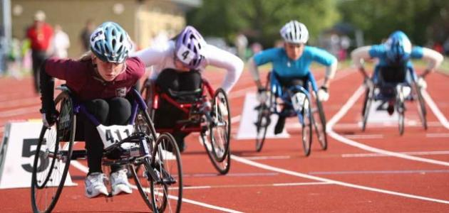

ذوي الهمم
تتعدد فئات ذوي الهمم لتشمل ذوي الإعاقة البصرية والسمعية والعقلية والجسدية والسلوكية وصعوبات التعلم.
وذو الهمة هو الفرد الذي ينحرف في قدرة من قدراته عن المستوى العادي؛ بما يجعله في احتياج إلى رعاية خاصة؛ ليُحقق أكبر إفادة ممكنة من قدراته، وقد ترتبط القدرة المنقوصة لديه بالجانب التعليمي، أو الجسمي، أو الاجتماعي، أو العقلي، أو الانفعالي نتيجة لعوامل وراثية أو بيئية.

ويُعد ذوو الهمم من الفئات التي حظيت باهتمام كبير من قبل القيادة السياسية في خضم النهضة بالجمهورية الجديدة؛ حيث التوجيهات المباشرة بدمجها في المجتمع، وتوفير الخدمات الداعمة لهم، مع الدعم المتكامل من قبل مؤسسات المجتمع العامة منها والخاصة، ما أدى لتنمية تقدير الذات والإحساس بالأمن والأمان والحد من الألم النفسي لديهم.
وقد أصدر الرئيس قرارًا جمهوريًا رقم (11) لسنة 2019م لإنشاء المجلس القومي لذوي الهمم، حرصًا من سيادته على تعزيز وتنمية وحماية ذوي الهمم؛ ولضمان فعاليته ألزم القانون المجلس بتقديم تقرير سنوي- إلى كل من رئيس الجمهورية، ومجلس النواب، ومجلس الوزراء- يضمنه حالة حقوق ذوي الهمم، وكُلف المجلس بوضع استراتيجية قومية تنهض بقدرات ذوي الهمم في المجالات المختلفة، وفي نصوص القانون إلزام صريح للوزارات والهيئات بتنفيذ اتفاقيات وخطط وبرامج ومشروعات المجلس القومي لذوي الهمم؛ بالإضافة إلى تمثيل ذوي الهمم في عضوية المحافل والمؤتمرات والمنظمات الدولية المعنية بقضاياهم، وكذلك توثيق المعلومات والبيانات والإحصاءات والدراسات والبحوث المتعلقة بشئونهم، وزيادة في حمايتهم يتلقى المجلس الشكاوي والمقترحات الخاصة بهم والعمل الفوري على حلها، ومن ثم تطبيق القانون بحزم لكل من يعتدي عليهم بالقول أو بالإيحاء أو بالفعل.
وجاءت مظاهر الدمج لذوي الهمم متمثلة في الرعاية الصحية؛ حيث العمل على حصر وتصنيف ذوي الهمم وفق تصنيفاتهم، والكشف الطبي بصفة مستمرة عليهم بما يُسهم في تجديد الخريطة الصحية لهم؛ بغية إتاحة تقديم الخدمات والبرامج الصحية بالصورة المناسبة والفعالة.
وخصصت وزارة الإسكان بمشروعها الاجتماعي (5%) من الوحدات السكنية لذوي الهمم، بما يناسب خصائصهم ويحقق المساواة مع غيرهم، ولم يتوقف الأمر عند هذا الحد، بل تضمن حقهم في الطرق بمساراتها لتأمينهم مع مراعاة السيولة المرورية في نفس الوقت.
Home Page